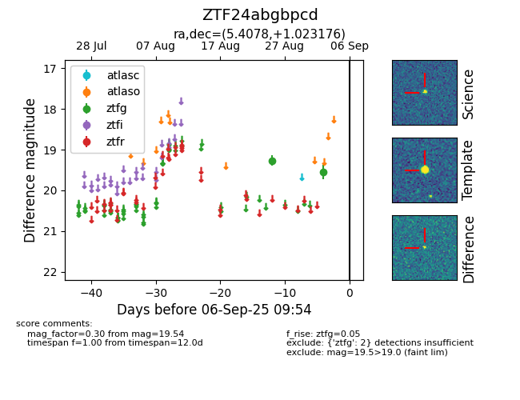

FINK: ZTF24abgbpcd
Lasair: ZTF24abgbpcd
ALeRCE: ZTF24abgbpcd
ZTF24abgbpcd (ztf,fink)
equatorial (ra, dec) = (5.4078,+1.02318)
galactic (l, b) = (107.4440,-60.94910)

last ztfg=19.54
2 ztfg detections